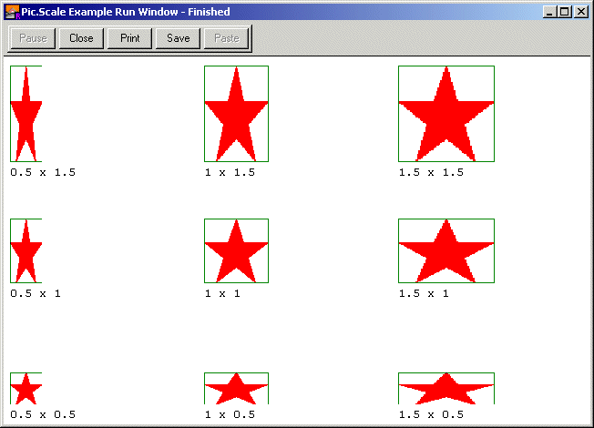

Pic.Scale (picID, newWidth, newHeight : int) : int
Pic.Scale is used to create a new picture by scaling (resizing) an already existing picture. Rotation can either be around a specific point in the picture (often used for rotating a picure in place) or just a general rotation. The newWidth and newHeight parameters are the desired width and height of the new picture. The newWidth and newHeight parameters may be negative, in which case the picture is mirror image (newWidth is negative) or upside-down (newHeight is negative) and the absolute values are used for the new width and height values.
The Pic.Scale command can fail, in which case it returns 0. The Error.LastMsg function can then be used to obtain more information about the failure.
Creating a larger picture by scaling a smaller picture will result in a "grainy" image with each pixel being scaled up into 2 or 3 pixels. In general image quality is better if a large picture is scaled down. However, when a large picture is scaled down, thin one-pixel wide lines can "disappear". In order to scale a picture while retaining its original aspect ratio, scale with multiples of the original width and height. The width and height of a picture can be obtained using Pic.Width and Pic.Height.
Scaling can be slow on older machines. Programs that are using animation should create and store all the scaled images that may be needed. Often pictures of an object at various sizes are stored in an array.
Note that the scaled picture is a newly created picture. When it is no longer needed, its memory should be released by using Pic.Free.
This program draws a set of stars scaled at 50%, 100% and 150% on different axes. Note how some single-pixel lines are removed when the picture is scaled down.. Output from Program

% The "Pic.Scale Example" program.
const STAR_SIZE : int := 70
var pic : int
var newPic : int
var picWidth, picHeight : int
% Get the original picture
Draw.FillStar (0, 0, STAR_SIZE, STAR_SIZE, brightred)
Draw.Box (0, 0, STAR_SIZE, STAR_SIZE, green)
pic := Pic.New (0, 0, STAR_SIZE, STAR_SIZE)
cls
picWidth := Pic.Width (pic)
picHeight := Pic.Height (pic)
for x : 1 .. 3
for y : 1 .. 3
newPic := Pic.Scale (pic, x * picWidth div 2,
y * picHeight div 2)
Pic.Draw (newPic, (x - 1) * maxx div 3 + 5,
(y - 1) * maxy div 3 + 20, picCopy)
Pic.Free (newPic)
Draw.Text (realstr (x / 2, 0) + " x " + realstr (y / 2, 0),
(x - 1) * maxx div 3 + 5, (y - 1) * maxy div 3 + 5,
defFontID, black)
end for
end for
Exported qualified. This means that you can only call the function by calling Pic.Scale, not by calling Scale.